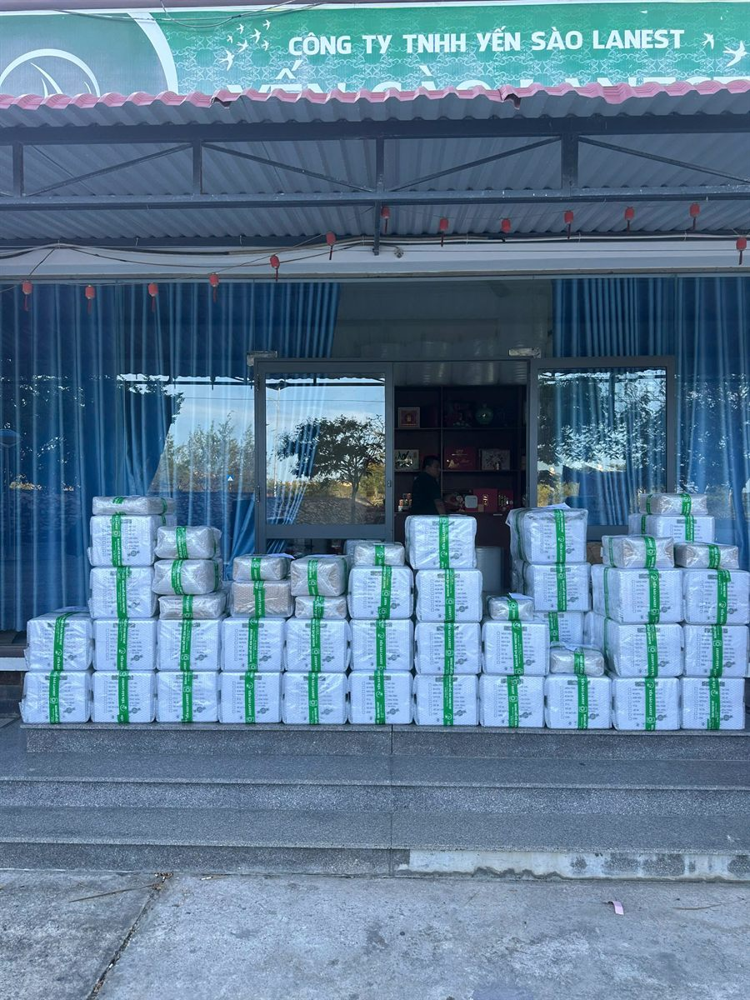
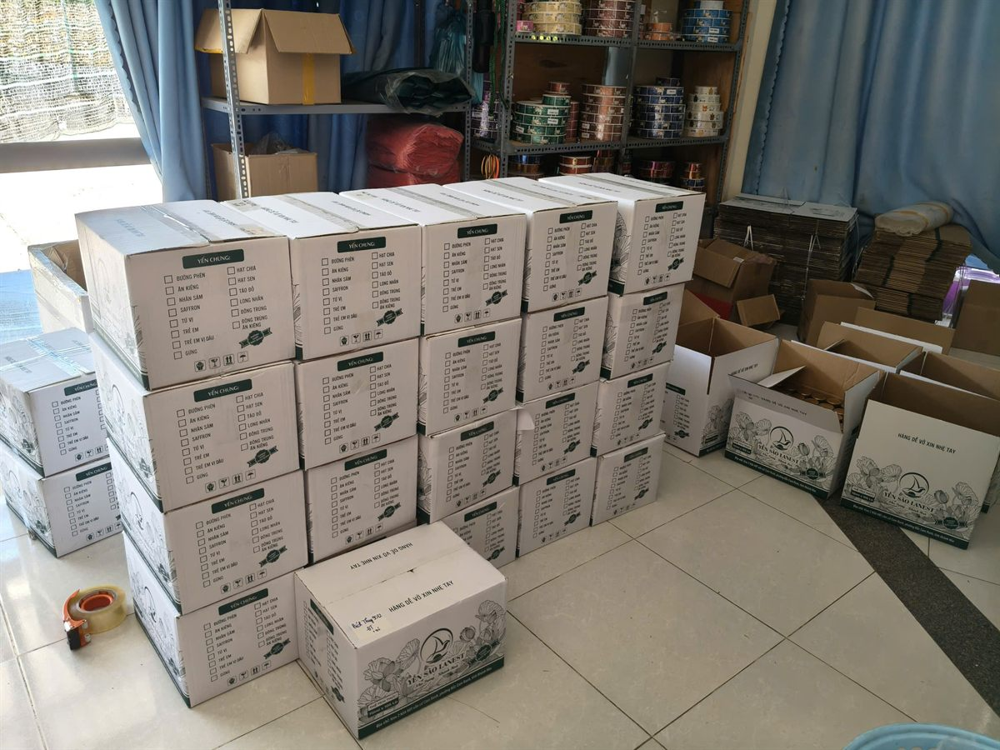

Hợp Tác Làm Đại Lý Yến Sào Lanest: Điều Kiện, Quyền Lợi, Cách Bắt Đầu
Yến Sào Lanest · Đăng ngày 10/10/2026

Người tính chuyện làm đại lý yến sào thường lo ba điều: hàng có giấy tờ đàng hoàng không, giá có bị phá không, và bán được khách rồi có bị hãng giành mất không. Bài này nói rõ cách Lanest làm việc với đại lý: nhập được những dòng hàng nào, đi kèm giấy tờ gì, đại lý được bảo vệ ra sao, phải giữ những nguyên tắc nào, và bắt đầu từ đâu. Bảng giá sỉ và chiết khấu Lanest không đăng công khai, anh chị liên hệ để nhận đúng chính sách theo hạng của mình.
Thùng hàng xếp sẵn trước Công ty TNHH Yến Sào Lanest, chờ giao cho đại lý
1. Lanest là ai trong vai trò nhà cung cấp
Công ty TNHH Yến Sào Lanest (mã số doanh nghiệp 4201991164) lấy bán sỉ cho đại lý, nhà phân phối làm kênh chính, giao hàng toàn quốc. Chị Lê, người sáng lập Lanest, kể về hệ thống của mình: "Chị làm 3 năm có hơn 200 đại lý trực tiếp."
Ngoài trụ sở tại Khánh Hòa, Lanest có chi nhánh ở Nha Trang, TP. Hồ Chí Minh, Vĩnh Long, Thanh Hóa, Nghệ An và Quảng Ngãi.
2. Đại lý có thể nhập những dòng hàng nào
| Dòng hàng | Quy cách |
| Yến hũ chưng sẵn 7g yến tươi | 14 vị, hũ thủy tinh 70ml, đóng thùng 105 hũ; giá đồng nhất cho mọi vị |
| Tổ yến chưng nguyên chất | 3 vị (đường phèn, đông trùng hạ thảo, gừng), mỗi hũ 1,5g tổ yến |
| Yến tinh chế | Nhiều loại theo mức làm sạch và tỷ lệ sợi; hộp 50g và 100g |
| Yến thô | Tổ yến thô, chân yến thô |
| Hộp quà biếu | Nhiều mẫu, thay đổi theo mùa |
Yến hũ 7g là dòng chủ lực của Lanest. Đại lý được cộng gộp nhiều sản phẩm trong cùng một đơn hàng.
3. Giấy tờ đi kèm: thứ giúp đại lý trả lời khách
Khách hỏi "yến này có thật không, có giấy tờ không" là chuyện hằng ngày của người bán yến. Lanest có:
- Chứng nhận ISO 22000:2018 về hệ thống quản lý an toàn thực phẩm.
- Bản tự công bố sản phẩm kèm phiếu kiểm nghiệm; mã vạch GS1 trên bao bì.
- Hóa đơn đầy đủ cho đơn hàng của đại lý.
- Kiểm nghiệm định kỳ. Theo lời chị Lê: "hàng tháng đều tự gửi mẫu đi kiểm nghiệm thật."
Vì sao chuyện giấy tờ quan trọng với đại lý? Chị Lê từng giải thích lý do nhiều nhãn yến quanh mình phải dừng lại:
"hồi trước có rất nhiều nhãn hàng ở đây nhưng người ta làm sản phẩm yến cho không đạt nên người ta ngưng hoặc người ta không xuất hóa đơn đầy đủ, sợ kiểm tra ngược lại nên ngưng, hoặc cắt máu quá sát không đủ khả năng duy trì."
Nhãn hàng dừng thì người khổ nhất là đại lý bên dưới, vì khách đã quen hàng mà không còn chỗ lấy. Muốn hiểu thêm cách Lanest làm hàng, anh chị xem bài 4 chốt kiểm và cam kết 3 không.
4. Quyền lợi: đại lý được bảo vệ những gì
- Giá được giữ thống nhất. Mọi cộng tác viên, đại lý, nhà phân phối phải bán đúng giá niêm yết; cấm bán phá giá dưới mọi hình thức. Khuyến mãi chỉ được chạy khi có văn bản chấp thuận của công ty. Nhờ vậy đại lý không phải đua giá với chính người cùng hệ thống.
- Khách của ai là của người đó. Chính sách cấm lôi kéo khách của đại lý khác. Riêng Lanest còn tự đặt cho mình một nguyên tắc chặt hơn, chị Lê nói: "mình không bao giờ đụng tới data khách hàng của đại lý ở bên dưới".
- Chủ thương hiệu không ra mặt bán lẻ cạnh tranh với đại lý. Nguyên văn: "chị ra mặt bán thì đại lý bên dưới dễ bị mất lòng tin á. Mình chỉ là người xây dựng thương hiệu thôi còn bán hàng để các bạn khác bán."
- Bảo hành khi mua hàng chính hãng, có đủ hóa đơn.
- Hỗ trợ bán hàng: nội dung truyền thông, đào tạo tư vấn sản phẩm, chăm sóc sau bán.
Với người chưa từng kinh doanh, chị Lê kể: "Trước chị đã đào tạo nhiều bạn bỉm sữa bán hàng tháng mấy trăm thùng yến." Đó là chuyện đã qua của từng người cụ thể; kết quả mỗi đại lý phụ thuộc vào khu vực và công sức bán, Lanest không hứa trước doanh số.

Thùng yến chưng in sẵn danh sách vị, đánh dấu theo đơn của từng đại lý
5. Điều kiện và nghĩa vụ của đại lý
Quyền lợi đi kèm nguyên tắc. Đây là những điều Lanest áp dụng chung cho cả hệ thống, không phụ thuộc quan hệ cá nhân:
- Bán đúng giá niêm yết, không phá giá công khai hay nhắn riêng, không tự làm combo dưới giá.
- Không chủ động liên hệ, lôi kéo khách của hệ thống chung Lanest hay của đại lý khác. Nếu khách tự tìm đến vì không hài lòng với nơi bán cũ, đại lý báo công ty xác minh trước khi nhận.
- Cạnh tranh bằng chất lượng tư vấn, kiến thức sản phẩm và cách chăm sóc khách, không cạnh tranh bằng giá thấp.
- Vi phạm được xử lý theo ba bước: nhắc nhở, cảnh cáo kèm giảm chiết khấu trong một tháng, rồi ngưng cấp hàng và chấm dứt hợp tác.
Đối tác được chia hạng theo sản lượng (cộng tác viên, sỉ nhỏ, đại lý, tổng đại lý, nhà phân phối), mỗi hạng có mức chiết khấu và điều kiện thanh toán riêng. Chi tiết từng hạng, anh chị liên hệ để nhận chính sách đang áp dụng.
6. Cách bắt đầu
- Liên hệ Lanest qua hotline 0258 6278 627, fanpage Yến Sào Lanest hoặc email Yensaolanest79@gmail.com.
- Trao đổi nhu cầu: khu vực bán, kênh bán (cửa hàng, online, khách quen), dòng hàng muốn nhập và sản lượng dự kiến.
- Nhận chính sách theo hạng: bảng giá sỉ, chiết khấu, điều kiện thanh toán được gửi riêng cho từng đại lý.
- Đặt đơn đầu và kiểm hàng khi nhận. Lanest giao toàn quốc, cho kiểm tra trước khi nhận.
Về thời điểm, chị Lê chia sẻ kinh nghiệm nghề: "Năm nào cũng vậy từ tháng 8 đến cuối năm doanh thu bên chị lúc nào cũng gấp ba lần những tháng còn lại." Người định bắt đầu nên chuẩn bị hàng sớm trước mùa quà Tết.
Câu hỏi thường gặp
Chưa từng kinh doanh có làm đại lý yến sào được không?
Được. Chị Lê từng đào tạo nhiều mẹ bỉm sữa bán yến, và Lanest có hỗ trợ nội dung, đào tạo tư vấn sản phẩm cho đại lý.
Có phải nhập số lượng lớn mới làm đại lý?
Không bắt buộc. Lanest chia hạng theo sản lượng, từ cộng tác viên, sỉ nhỏ tới nhà phân phối. Anh chị gọi 0258 6278 627 để được tư vấn hạng phù hợp.
Đại lý có được tự giảm giá để bán nhanh?
Không. Mọi khuyến mãi phải có văn bản chấp thuận của công ty. Giữ giá chung là cách bảo vệ biên lời của chính các đại lý.